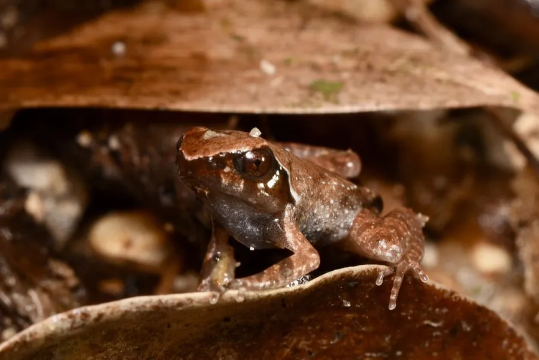

两栖动物 · 动物界
莽山角蟾 Megophrys mangshanensis

南岭山地特有种，体色黄绿渐变为紫灰，两眼间有三角形褐斑，雄蟾体长约 6 厘米，蝌蚪口部呈漏斗状，生活在清凉溪流边。
- 分类
- 门脊索动物门纲两栖纲目无尾目科角蟾科属角蟾属
- 栖息环境
- 南岭山地海拔 350–1200 m 的常绿阔叶林溪流、林下落叶层与石缝
- 地理分布
- 中国江西、湖南、广东、广西交界的南岭山脉及大瑶山
- 保护级别
- IUCN 无危（LC）
物种志
莽山角蟾雄蟾体长约 63 mm，雌蟾约 73 mm，体型较大。头较扁平，吻端呈盾形并突出于下唇，上眼睑外侧中部有一个小肤突；背面皮肤光滑，头背黄绿色，体前部向后逐渐变为紫灰色，两眼间有三角形褐色斑，其后角常与背部“X”形紫斑相连，斑纹边缘镶橘黄色细线。腹面紫黑色，股后部有黑白色斑。
它们生活在中国江西、湖南、广东、广西交界的南岭山脉及大瑶山，栖息于海拔 350–1200 m 的常绿阔叶林溪流及其附近，溪水清凉、石块多、林下落叶层厚。成蟾白天多隐蔽在溪边 20–30 m 的坡地落叶中，夜间到溪边活动，捕食昆虫与小型无脊椎动物。繁殖期在 6 月中下旬，雌蟾在流溪中产卵，蝌蚪全长约 45 mm，口部呈漏斗状，吸附在石缝间滤食。目前 IUCN 评为无危，但分布区狭窄，依赖原始溪流环境。
形态与习性
- 食性昆虫及小型无脊椎动物
- 体长雄蟾约 63 mm，雌蟾约 73 mm
- 海拔350–1200 m 的山地溪流
- 繁殖6 月中下旬产卵，蝌蚪口部呈漏斗状
- 特征头背黄绿，两眼间有三角形褐斑
- 习性白天藏在溪边落叶层中，夜间活动
趣味知识
- 雄蟾体长约 6 cm，雌蟾可达 7 cm 以上，在角蟾中属于体型较大的种类。
- 它的蝌蚪口部呈漏斗状，贴在石缝间滤食水流带来的细小食物。
- 两眼之间的三角形褐斑常与背部的 X 形紫斑相连，是识别它的重要花纹。